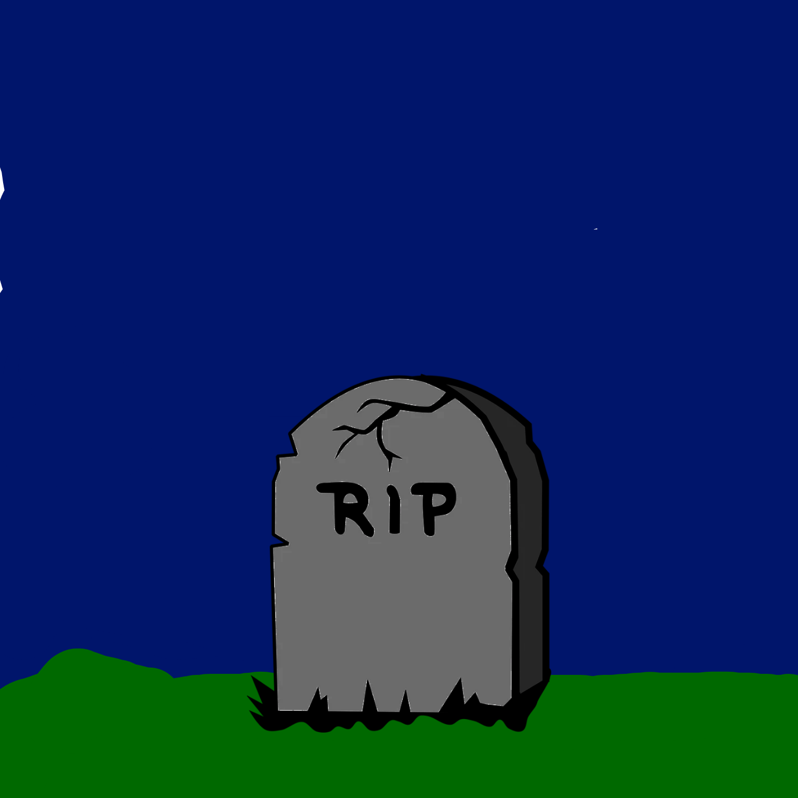

Me lembro que dias antes dele finalmente me ver pela primeira vez, a pessoa que me deu ele dizia tipo "É hoje que eu irei entregar ele a você garoto" (algo parecido) e nesse "depois" se passaram de três a quatro dias(fora o dia em que ele me entregou o *Jobson*), nesses dias eu sempre acordava com disposição e alegria, eu estava muito ansioso para conhecê-lo, eu estava feliz, mas no dia que o *Jobson* foi entregado para a minha pessoa, a minha avó(foi ela que teve a ideia de adotar o *Jobson*(inclusive ela era a pessoa responsabilizada por cuidar dele)) disse que o cara que entregou o *Jobson* tinha adiado para duas semanas na frente, pelo menos era o que eu achava, na verdade a minha avó havia combinado com o cara que entregou *Jobson* para que no mesmo dia que ela iria falar isso para mim era para ele vir entregar *Jobson*, bem, eu recebi a "notícia" que *Jobson* só iria vim duas semanas no futuro, eu fiquei triste, isso me decepcionou, porém a tarde daquele dia eu ouvi batidas no portão, e disse para minha avó que havia alguém do lado de fora do prédio em que moro, ela anciosa, foi abrir o portão para alguem entrar, esse alguem era nada mais nada menos que a pessoa que me deu o *Jobson*, eu não sabia que era ele, muito menos que ele vinha com o *Jobson*, primeiro ele chegou sem o *Jobson*, pensei "ahh esse cara não vai vim com o *Jobson*, quais as chances" (eu as vezes tinha umas paranoias doidas que eram verdade), depois de tipo uns cinquenta segundos ele voltou para o carro dele(eu acho que era dele), e eu por curiosidade e um pouco de paranoia segui ele secretamente, quando eu ví o *Jobson* nos braços dele, eu muito feliz, voutei para casa scretamente e rápidamente sem que ninguém tenha me percebido(novamente não tenho certeza), mas só sei que quando eu cheguei dentro de minha casa disfarçei a minha felicidade, fingi que o que eu tinha acabado de ver não tinha acontecido e esperei até que ele chega-se com *Jobson*, quando eu o ví mais de perto fiquei feliz, brinquei com ele, apenas parei quando *ele* casou de brincar, enfin eu amava e ainda amo ele demais, todos os momentos juntos que eu tive com ele, até mesmo aqueles que ele me azunhou, todos, todos os momentos juntos com ele valeram a pena.
_Guilherme Oliveira Barros
